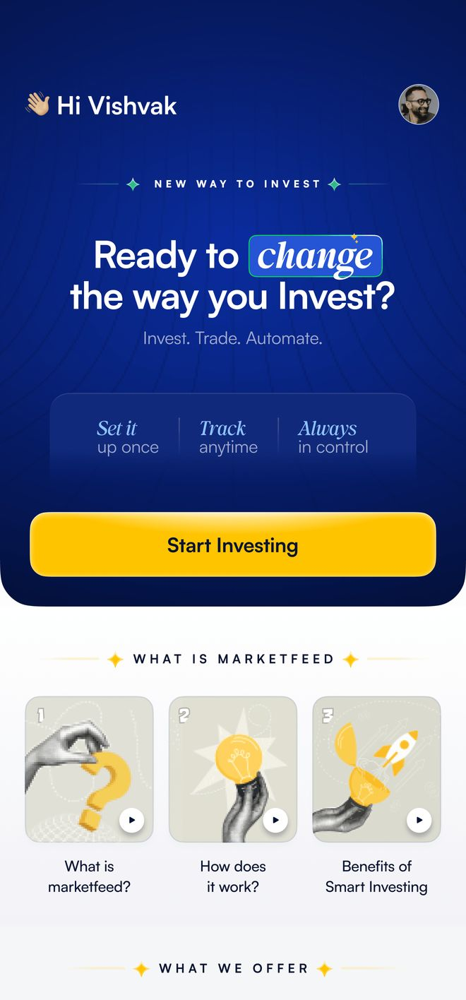
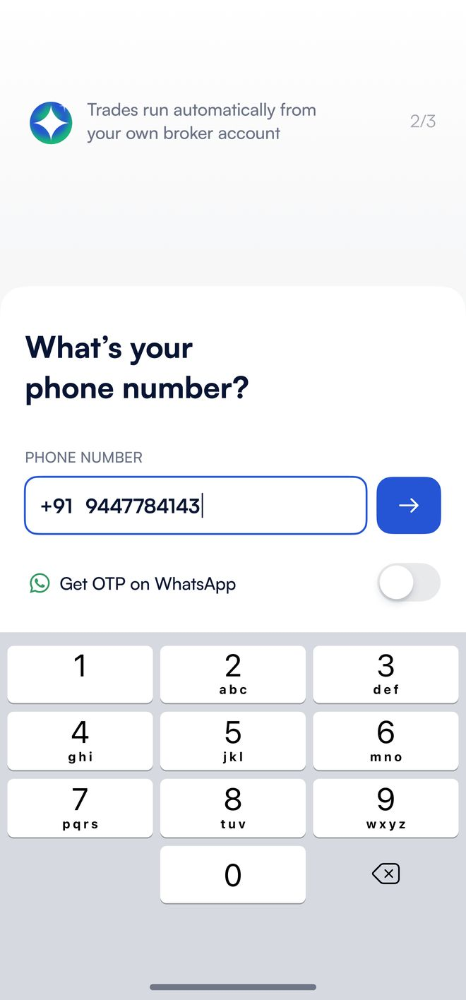
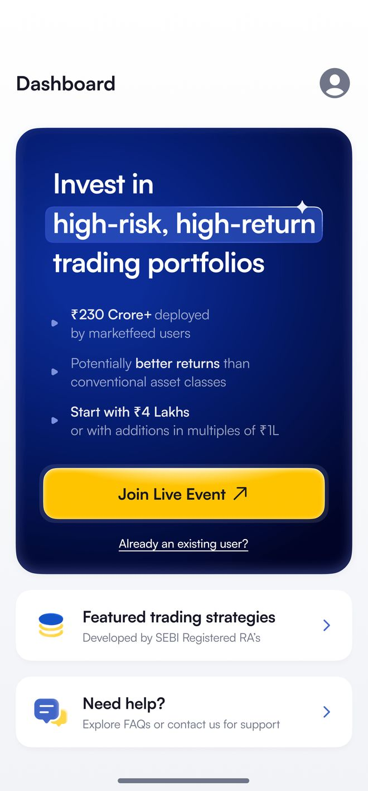
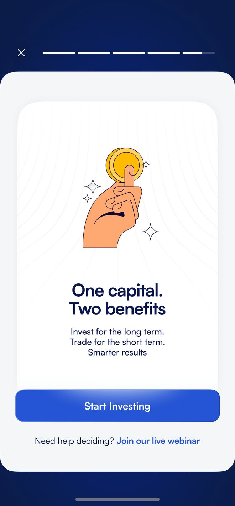
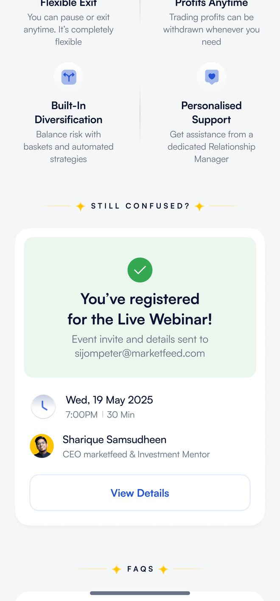
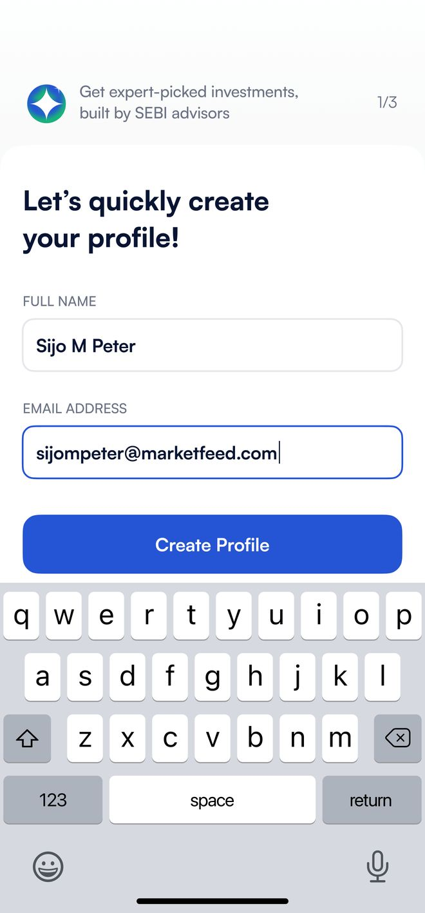
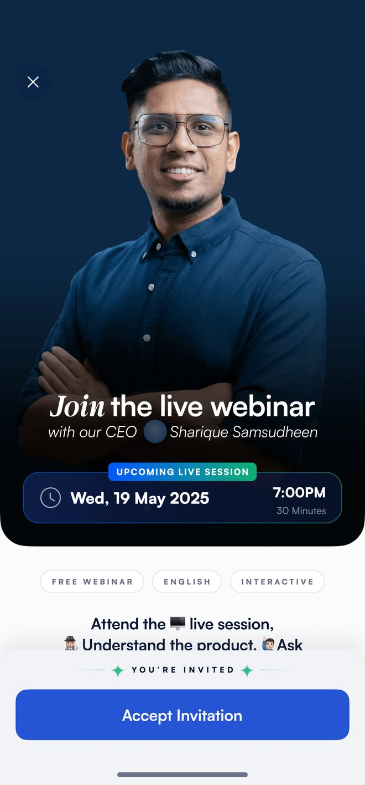
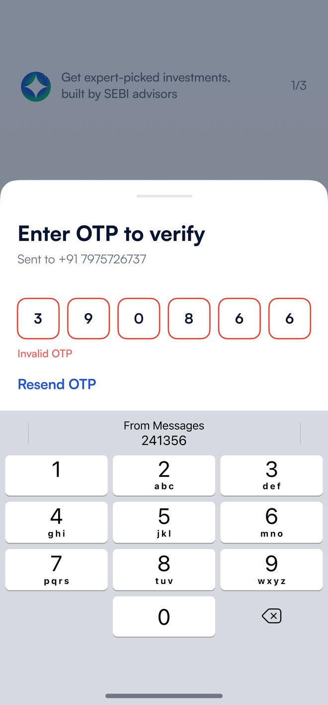
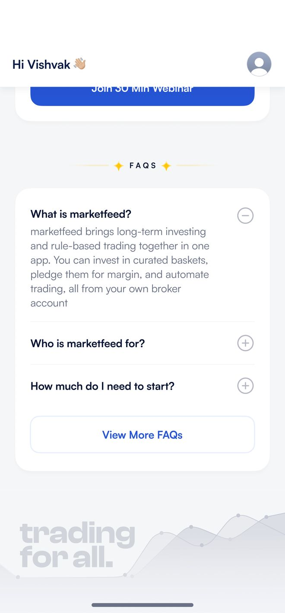
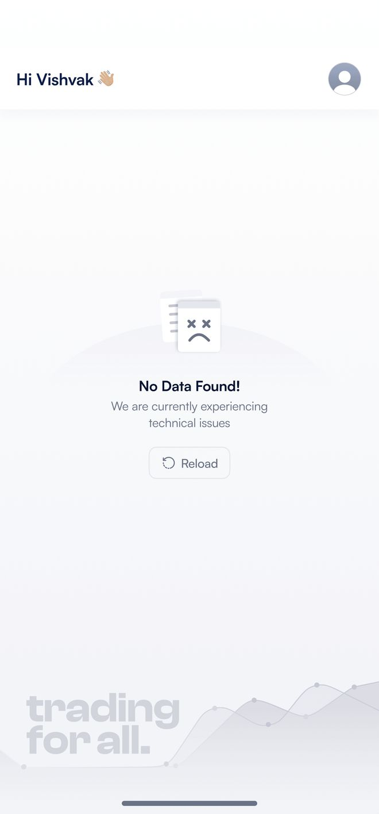

The webinar experience, rebuilt as a mobile app
Redesigning Marketfeed's mobile acquisition journey. A new self-serve app entry, progressive education, and a clear broker onboarding flow that reduces manual operational dependency


Why the webinar became a bottleneck
Marketfeed is an automated investing platform that helps users allocate capital into high-risk, high-return trading portfolios directly from their mobile app
While users could explore basic information, their actual onboarding and investment journey ultimately flowed through a single scheduled live webinar. This made the webinar the highest leverage surface in our acquisition funnel, where any friction directly impacted our overall growth
The business wanted to rapidly scale user acquisition and broker account openings, while users consistently faced forced waiting times and multi-platform friction just to get started
Forced waiting
Users had to wait for a scheduled webinar to learn about the product. If they missed it, they usually dropped off
Manual operations
The process didn’t scale. Our team had to manually schedule sessions, send reminders, and follow up with every single user

Too many jumps
The journey was scattered. Users had to bounce between the app, the website, registration forms, and YouTube just to get started
Broken tracking
Because users jumped across different platforms before actually logging into the app, we couldn't accurately track their journey
In their own words…
The need for this redesign wasn't an assumption. We consistently heard the same frustrations in our support channels. Users clearly told us what was blocking them from starting their investment journey
“I know how the product works and I'm ready to invest. Do I really have to wait for Thursday's webinar, or can I just get a past recording?”
“I downloaded the app to invest, but it’s asking me to join a live event. Is this an educational platform? I don't want to attend classes; I just want to invest.”
“I filled out the registration form on the website, but the app still says my account isn't ready. What do I do now?”
“I waited days for the live session but had to drop off halfway due to an emergency. Now I'm completely stuck. What are the next steps? Are there even any other upcoming events?”
Adapted from real user feedback and support queries.
Personal information has been modified.
What we set out to do
Three clear goals shaped the redesign from the start. Not all of them were equally visible to users. All of them mattered to the product
“How do we let users start investing without making them wait for a class?”
Make the app a self-serve entry point
Remove the mandatory live session bottleneck. Allow users to understand the product value, sign up, and start their investment journey directly within the app at their own pace
“How can we scale acquisition without scaling our support team?”
Reduce manual operational dependency
Eliminate the need for constant agent coordination. By building progressive education and readiness checks into the app, we can guide users automatically and free up the support team
“How do we actually track where users are dropping off?”
Build a unified, trackable funnel
Stop bouncing users across external websites and forms. Bring the entire onboarding process, from initial pitch to broker account creation, into one measurable app environment
Key product decisions
Before designing screens, I worked through the decisions that would shape the whole experience. A few mattered more than the rest, and each one came with a tradeoff
Pitch the product before asking for login
Previously, users entered the funnel blindly. I wanted to show the core value and build trust upfront, even if it meant adding a step before authentication
One home screen, multiple paths forward
Instead of forcing everyone into a live event, I wanted the layout to adapt. High-intent users could start investing immediately, while others could explore at their own pace
Break the webinar into progressive education
The webinar worked well for building confidence. Instead of removing it entirely, I translated its core concepts into bite-sized, on-demand modules within the app
Make the live session an optional fallback
Some users still prefer human interaction. I kept the webinar registration available, but positioned it as a support channel rather than the primary gateway
The complete entry journey
The redesigned entry flow owns the complete acquisition journey inside the Marketfeed app. We replaced the mandatory live session with in-app education and a readiness questionnaire. This helped users learn at their own pace and gave our agents better context
Value is established upfront. Users see what Marketfeed does before being asked for a phone number
Phone-based login becomes the required entry point, allowing us to accurately track the entire journey
The home screen adapts. High-intent users can 'Start Investing', while others can explore education

Core concepts from the 30-minute webinar are translated into bite-sized, easy-to-read in-app modules

For those who still want human interaction, the live session remains available as a helpful support channel
Users answer a few quick questions about their investment readiness, providing vital context for our agents
Value before the ask
Users used to hit a generic registration form. Now, the first screen clearly pitches the core value, automating investing and trading, backed by trust markers like "SEBI Registered" and "₹300 Cr+ deployed" before ever asking for a phone number
In high-ticket finance, trust is the first conversion metric. Users need a compelling reason to hand over their data
A single router for every intent
New or existing, every user starts with their phone number. The system does the heavy lifting, routing them automatically to their specific stage. For new users, "Let's quickly create your profile" asks only for a name and email, while reassuring microcopy validates their choice at every step
Removing the cognitive load of choosing between "Login" and "Sign Up" reduces drop-offs. The system sorts the intent, not the user

Turning a 30-minute webinar into an interface
The heavy, 30-minute webinar narrative was chunked into a familiar, bite-sized "Story" format for medium-intent users. Sections like "What is marketfeed" and "Your Benefits" explain the "One Capital, Two Benefits" proposition natively, fully compliant with SEBI regulations
By matching how users naturally consume information daily (Stories), we educated them at their own pace without the friction of scheduling a live session
Humanising the digital action
Right before the critical step of starting a ₹5 Lakh investment, high-intent users see an auto-playing explainer video from the CEO, followed by clear next steps to onboard
It strategically transfers the high trust and personal connection of a live webinar directly into the app, placing the founder's reassurance exactly at the point of highest friction

The webinar as an optional fallback
The live webinar wasn't killed; it was repurposed for low-confidence users. Placed strategically at the bottom of the home screen under a "Still Confused?" section, the CTA shifted from a demanding "Register for Webinar" to a welcoming "Accept Invitation"
Making the webinar optional filtered for intent. It became a targeted confidence-building tool rather than a mandatory bottleneck for everyone
Designing for when things break
The live Q&A was productised into a dynamic FAQ section driven by years of real user questions. When a webinar isn't scheduled, the flow gracefully falls back to a "Contact Support" module featuring real agent photos to maintain a personal touch
Every component, from empty states and invalid OTPs to network errors and future offering cards, was structured to scale seamlessly without breaking the core layout



We made it easier to get started without a live webinar
We tested the new app flow alongside the legacy webinar. Once data proved faster onboarding and higher-intent support conversations, we shifted 100% of our traffic to the app
Drop in Webinar Dependency
By removing the mandatory live session, we eliminated the heavy manual overhead of scheduling and sending reminders. The webinar smoothly transitioned into an optional fallback
Faster Self-Serve Onboarding
Users no longer had to wait days. By adapting education and trust-building into contextual UI, we empowered users to learn and onboard instantly on their own time
Improved Activation Rate
An intent-driven entry point replaced our rigid funnel. Contextual education and targeted trust markers gave users the exact confidence to complete account setups instantly
Reflections & learnings
- 01One-size-fits-all funnels create friction: Treating every user the same was our biggest bottleneck. By segmenting users based on their intent (High, Medium, Low) and tailoring their pathways, we transformed a rigid gateway into a frictionless, personalised journey.
- 02Education is about timing and format, not just duration: Breaking a 30-minute webinar into bite-sized, contextual UI chunks (stories, benefit cards, and short videos) proved far more effective than a single massive information dump
- 03Trust must be strategically placed, not just stated: Instead of front-loading credibility, placing the CEO’s familiar face and short videos right before high-friction actions seamlessly transferred his real-world trust into the app.